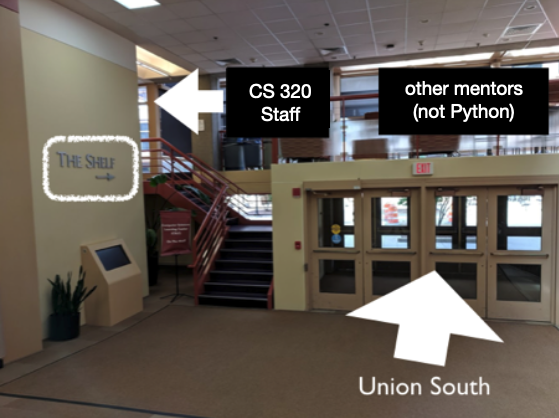

Welcome to Data Programming II! We'll be building on what you learned in Data Programming I. In that course, we mostly worried about getting the code correct -- in the first part of 320, we'll start thinking about how to make it efficient. Next, we'll be learning more about the Internet (among other things, you'll build a simple website for distributing a dataset) and advanced visualizations (like maps and animations). We'll conclude the course with a light introduction to machine learning with the sklearn package.
Most students ask for help at some point during the semester. Some regularly come to office hours weekly -- that's welcome as well!
Office hours are "walk in" -- no need to schedule. Check the Office Hour Schedule to see your options.
Before 6pm, office hours are in person at the Shelf (platform above entrance to CS building):

After 6pm, all help is via Zoom (see links in schedule).
Besides email (described above), there are four ways we'll communicate outside of class.
1. Piazza: You can ask questions (and see the other questions) here. Do not post code snippets that are >5 lines long, that's considered cheating.
2. Canvas: We'll make announcements on Canvas and periodically upload grades there (detailed feedback will only be on this site, however)
3. Class Forms: We have various forms for us to leave (optionally anonymous) feedback and report exam conflicts.
4. Code Review: You will upload projects using this tool. Via the same tool, TAs will leave comments on your code. Even projects scoring 100% often have a lot of room for improvement, so please take these seriously. When submitting, you can ask for specific kinds of feedback, based on what coding skills you're most interested in developing.
We'll post a weekly lab document. You can work through it individually, or with your assigned group. TAs and mentors will walk around to answer questions that might arise.
If you have extra time at lab after completing the lab doc, you may leave early, or (probably better) work with your assigned group on the project or quizzes.
Grading breakdown
At the end, you'll have a score out of 100, and I'll set a curve.
Submission: Everybody will individually upload either a .py file or a .ipynb (as specified) file for each project with the submission tool.
Collaboration: Even though everybody will make their individual submission, every project will have (1) a group part and (2) an individual part. For the group part, any form of help from anybody on your group is allowed (even looking at each other's code); I recommend you find times for everybody on the group to work at the same time so you can help each other through coding difficulties in this part. You're also welcome to do the "group" part individually, or with a subset of your assigned group. For the individual part, you may only receive help from course staff (instructor/TAs/mentors); you may not discuss this part with anybody else (in the class or otherwise) or get help from them.
Late Policy: if you submit a version of your project on time that is scoring at least 50 percent with the tester, you may have up to 3 extra days to complete the project (no penalty and no explanation required). If you have other special circumstances (e.g., illness, family emergency), email me asking for accomodations. Along with this email, submit whatever you have completed.
Code Review: A TA will give you detailed comments on specific parts of your assignment. This feedback process is called a "code review", and is a common requirement in industry before a programmer is allowed to add her code changes to the main codebase. Read your code reviews carefully; even if you receive 100% on your work, we'll often give you tips to save effort in the future.
Project Grading: Grades will be largely based on automatic tests that we run. We'll share the tests with you before the due date, so you should rarely be too surprised by your grade. Though it shouldn't be common, we may deduct points for serious hardcoding, not following directions, or other issues. Some bugs (called non-deterministic bugs) don't show up every time code is run -- if you have such an issues, we may give you a different grade based on the tester than what you were expecting based on when you ran it. Finally, our tests aren't very good at evaluating whether plots and other visualizations look how they should (a human usually needs to evaluate that).
Project Grading: The autograder will be run periodically during 2 days days prior to a project deadline (from Monday night if the deadline is on Wednesday and so on). Because of this, we expect you to try submitting your project early and make sure nothing crashes. However, this should not be a substitute for running tester.py locally. You should only try submitting once you pass the tests locally.
Please use standard packages in python for the assignment.
The following packages are allowed for use in all the projects: jupyter, pandas, numpy, matplotlib, requests, beautifulsoup4, statistics, recordclass, sklearn, haversine, gitpython, graphviz, pylint, lxml, flask, bs4, html5lib, geopandas, shapely, descartes, click, netaddr, torch==1.4.0+cpu, torch vision=0.5.0+cpu.
Using specialized packages will result in a score of zero when submitted for grading. Please contact TA if you are not sure how to code something without specialized packages or for the possibility to use for specialised packages.
There will be a short Canvas quiz due at the end of most Wednesdays. Make sure you know the rules regarding what is allowed and what is not.
There will also be practice quizzes corresponding to each real quiz. These are optional, and there are no rules about how you may use them to practice.
These will be multiple choice exams taken in person. The midterm will be in class, the final will be at a different location (to be announced).
Some of the things that could count towards participation:
We'll assign readings from three main sources this semester (all free). Stay on top of them!
As a student, you may experience a range of issues that can be barriers to learning. These might include isolation related to COVID-19, strained relationships, anxiety, high levels of stress, alcohol/drug problems, feeling down, loss of loved one, and/or loss of motivation. Services exist on campus to support students who find themselves in these situations, like University Health Services and the Dean of Students Office. You can learn more about free, confidential mental health services at UHS by calling 608-265-5600 Opt. 2 or visiting uhs.wisc.edu. Drop-in staff are available daily at the Dean of Students Office to support students and answer questions. To learn more about the Dean of Students Office, please call 608-263-5700 or visit doso.students.wisc.edu.
In general, if you have any issues keeping up with the course for any reason, it's better to let me know -- I'll do my best to connect you with resources and try to think of accomodations to help out. I want to do whatever I can to help you succeed.
Yeah, of course you shouldn't cheat, but what is cheating? The most common form of academic misconduct in these classes involves copying/sharing code for programming projects. Here's an overview of what you can and cannot do:
Acceptable
NOT Acceptable
Similarity Detection: of course, with about 400 students, it's hard for a human TA to notice similar code across two submissions. Thus, we use automated tools to looks for similarities across submissions. Such similarity detection is an active area of computer science research, and the result is tools that detect code copying even when students methodically rename all variables and shuffle the order of their code. We take cheating detection seriously to make the course fair to students who put in the honest effort.
Citing Code: you can copy small snippets of code from stackoverflow (and other online references) if you cite them. For example, suppose I need to write some code that gets the median number from a list of numbers. I might search for "how to get the median of a list in python" and find a solution at https://stackoverflow.com/questions/24101524/finding-median-of-list-in-python.
I could (legitimately) post code from that page in my code, as long as it has a comment as follows:
# copied/adapted from https://stackoverflow.com/questions/24101524/finding-median-of-list-in-python
def median(lst):
sortedLst = sorted(lst)
lstLen = len(lst)
index = (lstLen - 1) // 2
if (lstLen % 2):
return sortedLst[index]
else:
return (sortedLst[index] + sortedLst[index + 1])/2.0
In contrast, copying from a nearly complete project (that accomplishes what you're trying to do for your project) is not OK. When in doubt, ask us! The best way to stay out of trouble is to be completely transparent about what you're doing.
Earning a recommendation letter is much harder than earning an A in this course. At a minimum, I'll want to see you doing something complex and interesting beyond the assingments. For a typical letter, I'll have collaborated with a student on some project for multiple months, with many iterations of feedback.
Most grad schools require recommenders to fill long forms rating students on various abilities (see an example below). Make sure that if you're asking me, I would be able to fill such a form without needing to put "I don't know" as my answer to many of the questions.